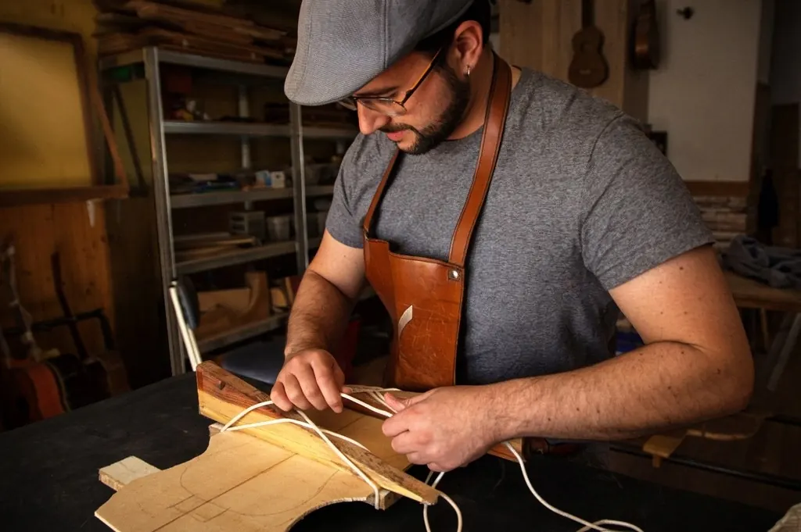
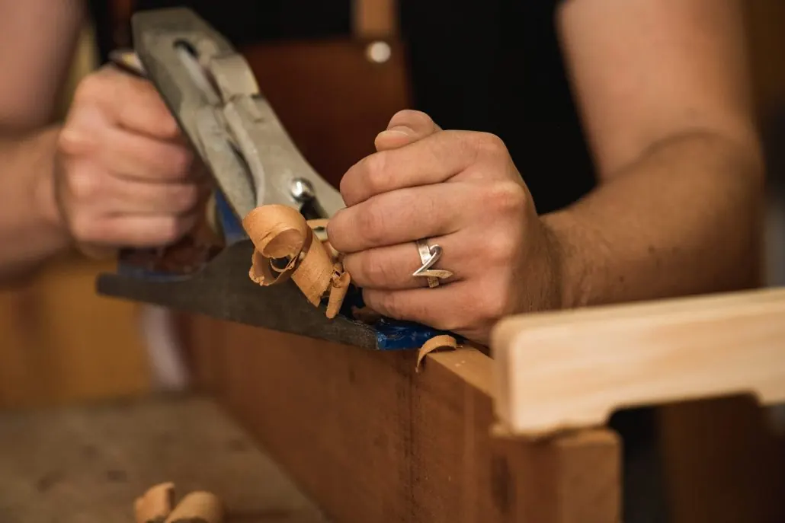
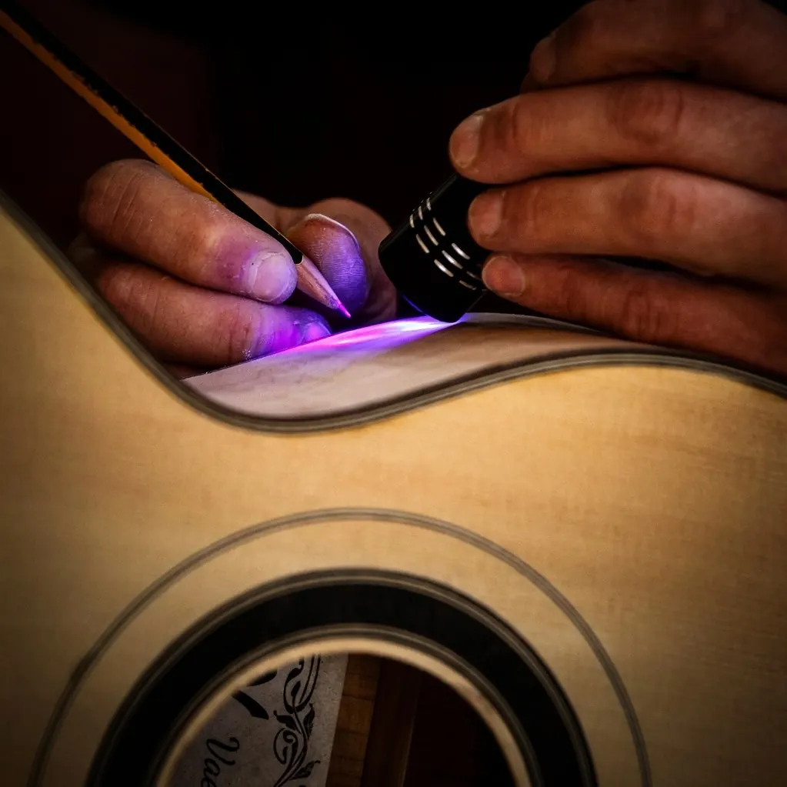

El taller · Los Alcázares, Murcia
El oficio detrás
del instrumento.
Soy Ginés Martínez, luthier artesanal y creador de Vael de Ginés. En mi taller construyo guitarras personalizadas e instrumentos de folclore, combinando el conocimiento del oficio, la selección de materiales y el trabajo manual.
 Ginés Martínez · Luthier
Ginés Martínez · Luthier
Una vida junto a la madera
Cada instrumento tiene
una historia que contar.
Vael de Ginés nace en Los Alcázares, un pueblo costero del Mar Menor, del deseo de construir instrumentos con identidad propia y de mantener vivo un oficio que se aprende con las manos.
Como luthier artesanal, entiendo cada instrumento como un proyecto único. Desde las guitarras diseñadas junto a cada músico hasta la construcción de instrumentos tradicionales, mi trabajo busca unir calidad artesanal, personalidad y respeto por la cultura musical.
El taller es un espacio de conversación, pruebas y decisiones compartidas. Allí se eligen las maderas, se trazan los planos, se ajusta la acción y se escucha por primera vez el instrumento terminado.

El taller · Los Alcázares, Murcia
La artesanía está en cada decisión, en el silencio del taller y en el respeto absoluto al alma de la madera.Ginés Martínez · Luthier
Cómo trabajo
Tres cosas que no
negocio nunca.
El oficio, primero
Conocer la madera, la acústica y el comportamiento de cada material permite tomar decisiones con criterio. La técnica está al servicio del instrumento, no al revés.
Maderas con historia
Selecciono y estaciono las maderas durante años. Su densidad, veta y elasticidad determinan cómo se aprovecha cada pieza y qué voz puede llegar a tener.
Cada músico, un proyecto
Escucho antes de construir. La conversación con quien va a tocar el instrumento es tan importante como el diseño o la elección de la madera.
El proceso artesanal
Del primer boceto
a la primera nota.
Un camino sin atajos, en el que cada fase tiene un propósito y cada decisión deja huella en el resultado final.

Conversación
Conozco tu forma de tocar, tu repertorio, tus preferencias estéticas y lo que necesitas sentir con el instrumento.
Diseño
Definimos proporciones, maderas, ergonomía y detalles ornamentales. Trazamos el proyecto antes de tocar la madera.
Selección
Elegimos las piezas de madera que mejor responden al proyecto, valorando veta, densidad y estabilidad.
Construcción
Ensamblado a mano, ajuste de la arquitectura interna, barnizado y curado. El tiempo del taller no se acelera.
Entrega
Puesta a punto, comprobación de acción y entonación, y entrega con las recomendaciones de cuidado del instrumento.
Dentro del taller
Donde nace
cada instrumento.




Reconocimientos
La confianza se construye
con hechos.
Formar parte de Homo Faber, recibir el Premio Emprendimiento y el reconocimiento de España Artesana son hitos que comparten un mismo origen: el trabajo bien hecho.
Hablemos de tu proyecto
Ven al taller,
hablemos sin prisa.
Puedes visitarme con cita previa en Los Alcázares (Murcia). Verás las maderas, conocerás el proceso y podremos hablar de tu próximo instrumento con calma.